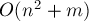
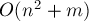
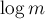
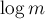
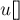

MAXimal
добавлено: 10 Jun 2008 19:32
редактировано: 9 Jul 2009 23:51
Содержание [скрыть]
Нахождение кратчайших путей от заданной вершины до всех остальных вершин алгоритмом Дейкстры для разреженных графов
Постановку задачи, алгоритм и его доказательство см. в статье об общем алгоритме Дейкстры.
Алгоритм
Напомним, что сложность алгоритма Дейкстры складывается из двух основных операций: время нахождения вершины с наименьшей величиной расстояния ![d[v]](../tex2png/cache/1d6e1859e7756da32846240db3a97517.png) , и время совершения релаксации, т.е. время изменения величины
, и время совершения релаксации, т.е. время изменения величины ![d[to]](../tex2png/cache/055ebcf2759a1e84a08f5a359acfc850.png) .
.
При простейшей реализации эти операции потребуют соответственно  и
и  времени. Учитывая, что первая операция всего выполняется раз, а вторая —
времени. Учитывая, что первая операция всего выполняется раз, а вторая —  , получаем асимптотику простейшей реализации алгоритма Дейкстры: .
, получаем асимптотику простейшей реализации алгоритма Дейкстры: .
Понятно, что эта асимптотика является оптимальной для плотных графов, т.е. когда  . Чем более разрежен граф (т.е. чем меньше
. Чем более разрежен граф (т.е. чем меньше  по сравнению с максимальным количество рёбер
по сравнению с максимальным количество рёбер  ), тем менее оптимальной становится эта оценка, и по вине первого слагаемого. Таким образом, надо улучшать время выполнения операций первого типа, не сильно ухудшая при этом время выполнения операций второго типа.
), тем менее оптимальной становится эта оценка, и по вине первого слагаемого. Таким образом, надо улучшать время выполнения операций первого типа, не сильно ухудшая при этом время выполнения операций второго типа.
Для этого надо использовать различные вспомогательные структуры данных. Наиболее привлекательными являются Фибоначчиевы кучи, которые позволяют производить операцию первого вида за  , а второго — за . Поэтому при использовании Фибоначчиевых куч время работы алгоритма Дейкстры составит
, а второго — за . Поэтому при использовании Фибоначчиевых куч время работы алгоритма Дейкстры составит  , что является практически теоретическим минимумом для алгоритма поиска кратчайшего пути. Кстати говоря, эта оценка является оптимальной для алгоритмов, основанных на алгоритме Дейкстры, т.е. Фибоначчиевы кучи являются оптимальными с этой точки зрения (это утверждение об оптимальности на самом деле основано на невозможности существования такой "идеальной" структуры данных — если бы она существовала, то можно было бы выполнять сортировку за линейное время, что, как известно, в общем случае невозможно; впрочем, интересно, что существует алгоритм Торупа (Thorup), который ищет кратчайший путь с оптимальной, линейной, асимптотикой, но основан он на совсем другой идее, чем алгоритм Дейкстры, поэтому никакого противоречия здесь нет). Однако, Фибоначчиевы кучи довольно сложны в реализации (и, надо отметить, имеют немалую константу, скрытую в асимптотике).
, что является практически теоретическим минимумом для алгоритма поиска кратчайшего пути. Кстати говоря, эта оценка является оптимальной для алгоритмов, основанных на алгоритме Дейкстры, т.е. Фибоначчиевы кучи являются оптимальными с этой точки зрения (это утверждение об оптимальности на самом деле основано на невозможности существования такой "идеальной" структуры данных — если бы она существовала, то можно было бы выполнять сортировку за линейное время, что, как известно, в общем случае невозможно; впрочем, интересно, что существует алгоритм Торупа (Thorup), который ищет кратчайший путь с оптимальной, линейной, асимптотикой, но основан он на совсем другой идее, чем алгоритм Дейкстры, поэтому никакого противоречия здесь нет). Однако, Фибоначчиевы кучи довольно сложны в реализации (и, надо отметить, имеют немалую константу, скрытую в асимптотике).
В качестве компромисса можно использовать структуры данных, позволяющие выполнять оба типа операций (фактически, это извлечение минимума и обновление элемента) за . Тогда время работы алгоритма Дейкстры составит:
В качестве такой структуры данных программистам на C++ удобно взять стандартный контейнер  или . Первый основан на красно-чёрном дереве, второй — на бинарной куче. Поэтому имеет меньшую константу, скрытую в асимпотике, однако у него есть и недостаток: он не поддерживает операцию удаления элемента, из-за чего приходится делать "обходной манёвр", который фактически приводит к замене в асимптотике
или . Первый основан на красно-чёрном дереве, второй — на бинарной куче. Поэтому имеет меньшую константу, скрытую в асимпотике, однако у него есть и недостаток: он не поддерживает операцию удаления элемента, из-за чего приходится делать "обходной манёвр", который фактически приводит к замене в асимптотике  на  (с точки зрения асимптотики это на самом деле ничего не меняет, но скрытую константу увеличивает).
на  (с точки зрения асимптотики это на самом деле ничего не меняет, но скрытую константу увеличивает).
Реализация
set
Начнём с контейнера . Поскольку в контейнере нам надо хранить вершины, упорядоченные по их величинам ![d[]](../tex2png/cache/192f42354669dea1048458208212e4d4.png) , то удобно в контейнер помещать пары: первый элемент пары — расстояние, а второй — номер вершины. В результате в будут храниться пары, автоматически упорядоченные по расстояниям, что нам и нужно.
, то удобно в контейнер помещать пары: первый элемент пары — расстояние, а второй — номер вершины. В результате в будут храниться пары, автоматически упорядоченные по расстояниям, что нам и нужно.
const int INF = 1000000000; int main() { int n; ... чтение n ... vector < vector < pair<int,int> > > g (n); ... чтение графа ... int s = ...; // стартовая вершина vector<int> d (n, INF), p (n); d[s] = 0; set < pair<int,int> > q; q.insert (make_pair (d[s], s)); while (!q.empty()) { int v = q.begin()->second; q.erase (q.begin()); for (size_t j=0; j<g[v].size(); ++j) { int to = g[v][j].first, len = g[v][j].second; if (d[v] + len < d[to]) { q.erase (make_pair (d[to], to)); d[to] = d[v] + len; p[to] = v; q.insert (make_pair (d[to], to)); } } } }
В отличие от обычного алгоритма Дейкстры, становится ненужным массив . Его роль, как и функцию нахождения вершины с наименьшим расстоянием, выполняет . Изначально в него помещаем стартовую вершину  с её расстоянием. Основной цикл алгоритма выполняется, пока в очереди есть хоть одна вершина. Из очереди извлекается вершина с наименьшим расстоянием, и затем из неё выполняются релаксации. Перед выполнением каждой успешной релаксации мы сначала удаляем из старую пару, а затем, после выполнения релаксации, добавляем обратно новую пару (с новым расстоянием ).
с её расстоянием. Основной цикл алгоритма выполняется, пока в очереди есть хоть одна вершина. Из очереди извлекается вершина с наименьшим расстоянием, и затем из неё выполняются релаксации. Перед выполнением каждой успешной релаксации мы сначала удаляем из старую пару, а затем, после выполнения релаксации, добавляем обратно новую пару (с новым расстоянием ).
priority_queue
Принципиально здесь отличий от нет, за исключением того момента, что удалять из произвольные элементы невозможно (хотя теоретически кучи поддерживают такую операцию, в стандартной библиотеке она не реализована). Поэтому приходится совершать "обходной манёвр": при релаксации просто не будем удалять старые пары из очереди. В результате в очереди могут находиться одновременно несколько пар для одной и той же вершины (но с разными расстояниями). Среди этих пар нас интересует только одна, для которой элемент равен , а все остальные являются фиктивными. Поэтому надо сделать небольшую модификацию: в начале каждой итерации, когда мы извлекаем из очереди очередную пару, будем проверять, фиктивная она или нет (для этого достаточно сравнить и ). Следует отметить, что это важная модификация: если не сделать её, то это приведёт к значительному ухудшению асимптотики (до  ).
).
Ещё нужно помнить о том, что упорядочивает элементы по убыванию, а не по возрастанию, как обычно. Проще всего преодолеть эту особенность не указанием своего оператора сравнения, а просто помещая в качестве элементов расстояния со знаком минус. В результате в корне кучи будут оказываться элементы с наименьшим расстоянием, что нам и нужно.
const int INF = 1000000000; int main() { int n; ... чтение n ... vector < vector < pair<int,int> > > g (n); ... чтение графа ... int s = ...; // стартовая вершина vector<int> d (n, INF), p (n); d[s] = 0; priority_queue < pair<int,int> > q; q.push (make_pair (0, s)); while (!q.empty()) { int v = q.top().second, cur_d = -q.top().first; q.pop(); if (cur_d > d[v]) continue; for (size_t j=0; j<g[v].size(); ++j) { int to = g[v][j].first, len = g[v][j].second; if (d[v] + len < d[to]) { d[to] = d[v] + len; p[to] = v; q.push (make_pair (-d[to], to)); } } } }
Как правило, на практике версия с оказывается несколько быстрее версии с .
Избавление от pair
Можно ещё немного улучшить производительность, если в контейнерах всё же хранить не пары, а только номера вершин. При этом, понятно, надо перегрузить оператор сравнения для вершин: сравнивать две вершины надо по расстояниям до них .
Поскольку в результате релаксации величина расстояния до какой-то вершины меняется, то надо понимать, что "сама по себе" структура данных не перестроится. Поэтому, хотя может показаться, что удалять/добавлять элементы в контейнер в процессе релаксации не надо, это приведёт к разрушению структуры данных. По-прежнему перед релаксацией надо удалить из структуры данных вершину , а после релаксации вставить её обратно — тогда никакие соотношения между элементами структуры данных не нарушатся.
А поскольку удалять элементы можно из , но нельзя из , то получается, что этот приём применим только к . На практике он заметно увеличивает производительность, особенно когда для хранения расстояний используются большие типы данных (как или ).